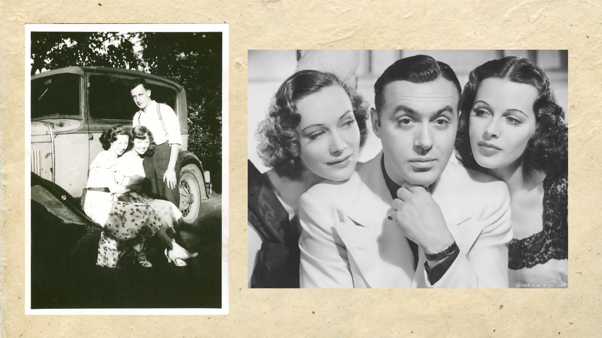
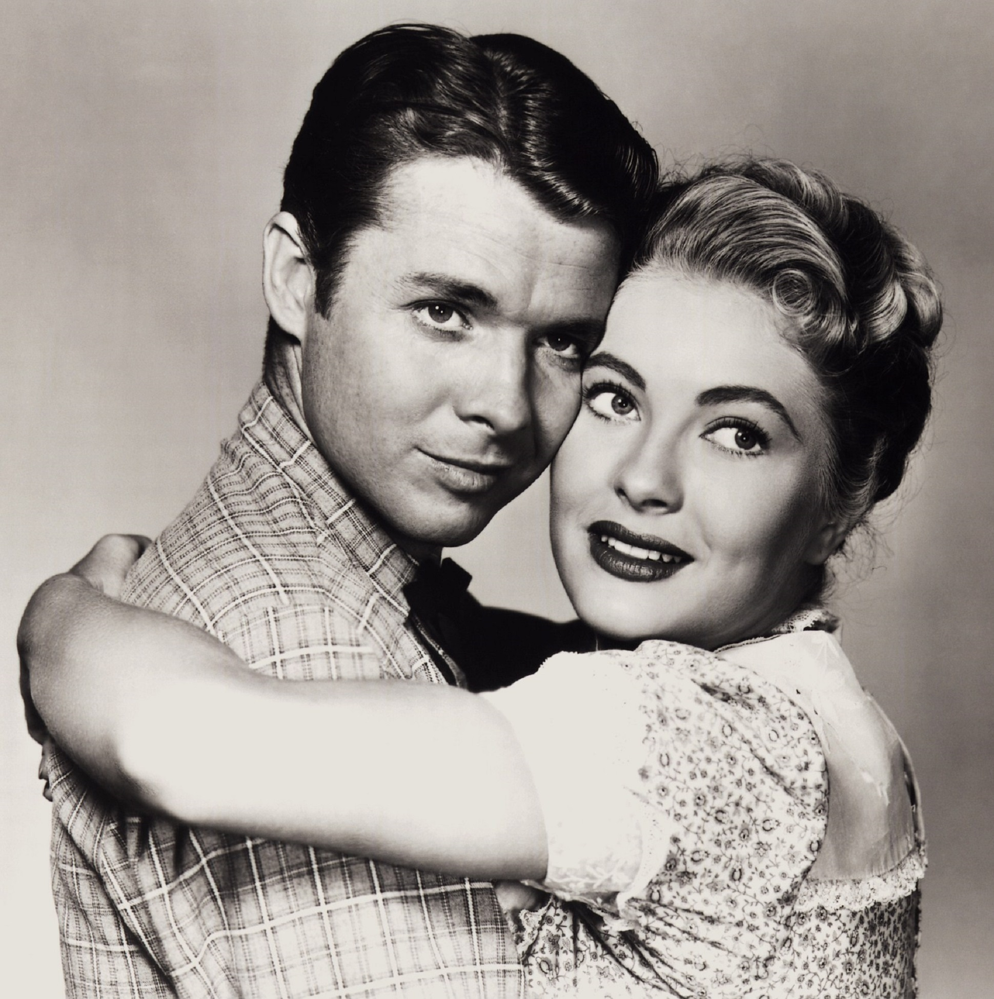
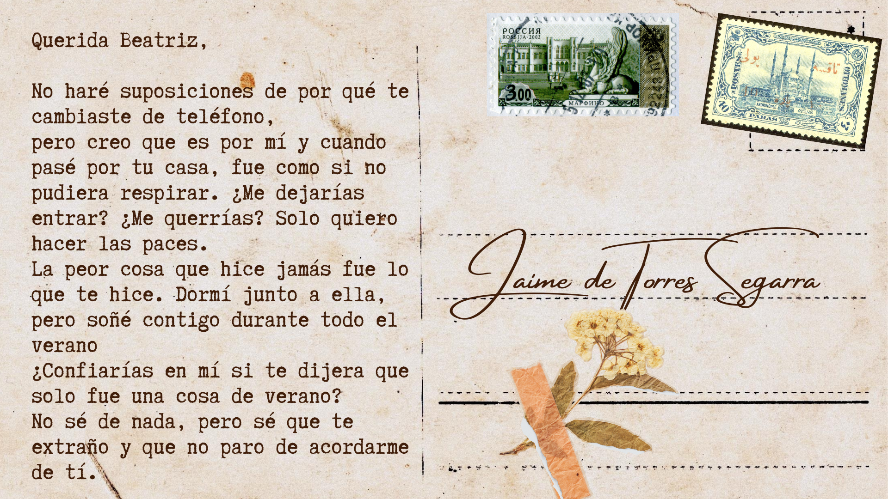

Esta historia narra la nostalgia de un amor perdido, de un arrepentimiento y de la espera de una promesa.
Estas narrativas ficticias se entrelazan con las experiencias íntimas como universales.
Los sentimientos que dan brochazos entre lo real y lo ficticio para difuminar las líneas que separan estos dos conceptos, serán los que hagan de esta narración algo cercano.
Partiendo de un triángulo amoroso, veremos todas las perspectivas de los implicados. Desde su amistad, su amor, hasta su posterior ruptura.

Beatriz
Beatriz siempre se mostró interesada en las artes. De la que siempre destacó fue el baile.
Cuando se le presentó la oportunidad de unirse al Royal Ballet School y a su gira de verano, se apenó por alejarse de su familia y de Jaime, su pareja.
Cuando volvió a su pueblo, su amiga Inés le contó que había visto a Jaime con Beatriz. Notó como sus sentimientos hacia él desaparecieron.
Se quedó rememorando lo bueno y lo malo, lo bien que él la hacía sentir y como luego la engañó con otra.
Jaime
Todo el que conocía a Jaime sabía que era ambicioso, tenía ansias por conseguir tener éxito en la gran ciudad como ingeniero.
Siempre habia sido un romántico pero el trabajo le alejaba de esa faceta que solo reservaba para unos pocos. No le era fácil confiar.
Jaime siempre permaneció cerca de Beatriz en cada paso que tomó para que sus sueños se cumplieran.
Si bien lucían como la pareja perfecta, él siempre tuvo envidia del éxito de Beatriz, refugiandose en los brazos de su amiga Adriana.

Cuando se enteró que Beatriz sabía de su secreto, no pudo evitar escribirla.

Adriana
Adriana sentía que era la constante sombra de Beatriz, nunca destacó lo suficiente para que la considerasen por ella misma. .
Jaime acudió a ella ya que se sentía muy solo. Ella sintió que realmente le escuchaba y se permitió sentir un poco más que la sensación de amistad.